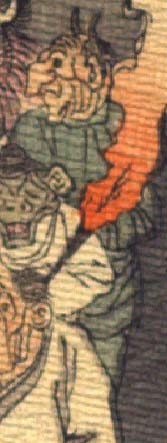

老人のような鬼。頭は禿げ、頭頂に2本角が生えている。額に皺が寄り、目は黒目だけで、鼻は大きく、曲がっている。頬がたるみ、幾重にも皺が寄っている。緑色の衣服を身に着けている。
著作者：J.Dautremer／出典：親書誌：U426_nichibunken_0123：Le vieillard et les démons／日付：2006／資源識別子：U426_nichibunken_0123_0002_0008
Copyright (c)2010- International Research Center for Japanese Studies, Kyoto, Japan. All rights reserved.